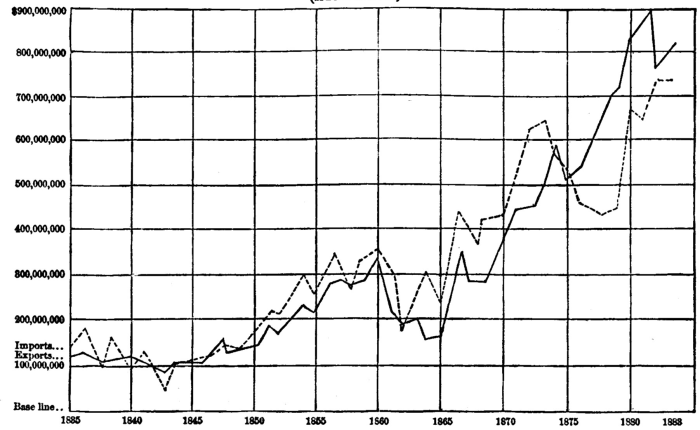

Chapter 30: Of International Values¶
30.1 § 1. The values of imported commodities depend on the Terms of international interchange¶
The values of commodities produced at the same place, or in places sufficiently adjacent for capital to move freely between them—let us say, for simplicity, of commodities produced in the same country—depend (temporary fluctuations apart) upon their cost of production. But the value of a commodity brought from a distant place, especially from a foreign country, does not depend on its cost of production in the place from whence it comes. On what, then, does it depend? The value of a thing in any place depends on the cost of its acquisition in that place; which, in the case of an imported article, means the cost of production of the thing which is exported to pay for it.
If, then, the United States imports wine from Spain, giving for every pipe of wine a bale of cloth, the exchange value of a pipe of wine in the United States will not depend upon what the production of the wine may have cost in Spain, but upon what the production of the cloth has cost in the United States. Though the wine may have cost in Spain the equivalent of only ten days' labor, yet, if the cloth costs in the United States twenty days' labor, the wine, when brought to the United States, will exchange for the produce of twenty days' American labor, plus the cost of carriage, including the usual profit on the importer's capital during the time it is locked up and withheld from other employment.1
The value, then, in any country, of a foreign commodity, depends on the quantity of home produce which must be given to the foreign country in exchange for it. In other words, the values of foreign commodities depend on the terms of international exchange. What, then, do these depend upon? What is it which, in the case supposed, causes a pipe of wine from Spain to be exchanged with the United States for exactly that quantity of cloth? We have seen that it is not their cost of production. If the cloth and the wine were both made in Spain, they would exchange at their cost of production in Spain; if they were both made in the United States, they would [possibly] exchange at their cost of production in the United States: but all the cloth being made in the United States, and all the wine in Spain, they are in circumstances to which we have already determined that the law of cost of production is not applicable. We must accordingly, as we have done before in a similar embarrassment, fall back upon an antecedent law, that of supply and demand; and in this we shall again find the solution of our difficulty.
30.2 § 2. The values of foreign commodities depend, not upon Cost of Production, but upon Reciprocal Demand and Supply¶
It has been previously explained that the conditions called. “international” are those, either within a nation, or those existing between two separate nations, which are such as to prevent the free movement of labor and capital from one group of industries to another, or from one locality to another distant one. Even if woolen cloth could be made cheaper in England than in the United States, we know that neither capital nor labor would easily leave the United States for England, although it might go from Rhode Island to Massachusetts under similar inducements. If shoes can be made with less advantage in Providence than in Lynn, the shoe industry will come to Lynn; but it does not follow that the English shoe industry would come to Lynn, even if the advantages of the latter were greater than those in England. If there be no obstacle to the free movement of labor and capital between places or occupations, and if some place or occupation can produce at a less cost than another place or occupation, then there will be a migration of the instruments of production. Since there is no free movement of labor and capital between one country and another, then two countries stand in the same relation as that of two “non-competing groups” within the same country, as before explained. When this fact is once fully grasped, the subject of international values becomes very simple. It does not differ from the question of those domestic values for which we found2 that the dependence on cost of production would not hold, but that their values were governed by reciprocal demand and supply.
Attention should be drawn to the real nature of the present inquiry. It is not here a question as to what causes international trade between two countries: that has been treated in the preceding chapter, and has been found to be a difference in the comparative cost. The question now is one of exchange value, that is, for how much of other commodities a given commodity will exchange. The reasons for the trade are supposed to exist; but we now want to know what the law is which determines the proportions of the exchange. Why does one article exchange for more or less of another? Not, as we have seen, because one costs more or less to produce than the other.
In the trade between the United States and England in iron and corn, formerly referred to (p. 383), it was seen that a 100 days' labor of corn buys from England iron which would have cost the United States 125 days' labor. England sends 150 days' labor of iron and buys from the United States corn which would have cost her 200 days' labor. But what rule fixes the proportions between 100 and 125 for the United States, and between 150 and 200 for England, at which the exchanges will take place? The trade increases the productiveness of both countries, but in what ratio will the two countries share this gain? The answer is, briefly, in the ratio set by reciprocal demand and supply, that is, the relative strength, as compared with each other, of the demands of the two countries respectively for iron and corn. This, however, may be capable of explanation in a simple form.
A has spades, and B has oats, to dispose of; and each wishes to get the article belonging to the other. Will A give one spade for one bushel of oats, or for two? Will B give two bushels of oats for one spade? That depends upon how strong a desire A has for oats; the intensity of his demand may induce him to give two spades for one bushel. But the exchange also depends upon B. If he has no great need for spades, and A has a strong desire for oats, B will get more spades for oats than otherwise, possibly two spades for one bushel of oats; that is, oats will have a larger exchange value. If, on the other hand, A cares less for oats than B does for spades, then the exchange will result in an increased value of spades relatively to oats. When two commodities exchange against each other, their exchange values will depend entirely upon the relative intensity of the demand on each side for the other commodity. And this simple form of the statement of reciprocal demand and supply is also the law of international values.
If instead of spades and oats we substitute iron and corn, and let the trade be between England and the United States, the quantity of corn required to buy a given quantity of iron will depend upon the relative demands of England for corn and of the United States for iron. Something may cut off England's demand for our breadstuffs, and they will then have a less exchange value relatively to iron (if we keep up our demand), and their prices will fall. But if, on the other hand, England has poor harvests, and consequently a great demand for corn, and if our demand for iron is not excessive at the same time, then our breadstuffs will rise in value. And this was precisely what happened from 1877 to 1879. Now, in the above illustration of corn and iron, how can we know whether or not x bushels of corn (the produce of 100 days' labor in the United States) will exchange for exactly y tons of English iron? That, again, will depend upon the reciprocal demands of the two countries for corn and iron respectively. Moreover, it will have been already observed that the ratio of exchange is not capable of being ascertained exactly, since it varies with changing conditions, namely, the desires of the people of the two countries, together with their means of purchase.
But yet these variations are capable of ascertainment as regards their extreme limits. The reciprocal demand can not carry the exchange value in either country beyond the line set by the cost of production of the article. For instance, an urgent need in England for corn (if the United States has a light demand for English iron) can not carry the ratio of exchange to a point such that England will offer so much more than 150 days' labor in iron for x bushels of American corn that it will go beyond 200 days' labor in iron. It will be seen at once, then, if that were the case, that England would produce the corn herself; and that she would then have no gain whatever from the trade. The ratio of exchange will thus be limited by the reciprocal demand on one side to the cost of production (200 days' labor) of English corn. On the other hand, if the supposition were reversed, and the United States had a great demand for iron, but England had little need for our corn, then we would not offer more than 125 days' labor of corn for y tons of iron, because for that expenditure of labor we could produce the iron ourselves.
In the above examples we have considered the case of a trade in corn and iron only. If corn were to typify all our goods wanted by England, and iron all English goods wanted by the United States, the conclusions would be exactly the same. The ratios of a myriad of things, each governed by its particular reciprocal demand, exchanging against each other, give a general result by which the goods sent out exchange against the goods brought back at such rates as are fixed by the reciprocal demands acting on all the goods. Goods are payments for goods; the ratio of exchange depends on reciprocal demand and supply. If we now add more countries to the example, we simply increase the number of persons (although in different countries) wanting our goods, as set off against our demands for the goods of this greater number of persons. If France, Germany, and England all want our corn, we must have some demand for the goods of France, Germany, and England also; and the same law of reciprocal demand gives the ratio of interchange. That this explanation is consistent with the facts is to be seen when we notice how eagerly the exporters of American staples watch the conditions which increase or diminish the foreign demand for these commodities, looking at them as the causes which directly affect their exchange value, or price.
When cost of carriage is added, it will increase the price of corn to England and of iron to the United States. But, as every one knows, an increase of price affects the demand; and, as the demand on each side is affected, a new ratio of exchange will finally be reached consistent with the strength of desires on each side. Who, therefore, will pay the most of the cost of carriage England or the United States? That will, again, depend on whether England has the greatest relative demand for American goods, as compared with the demand of the United States for English goods.
No absolute rule, therefore, can be laid down for the division of the cost, no more than for the division of the advantage; and it does not follow that, in whatever ratio the one is divided, the other will be divided in the same. It is impossible to say, if the cost of carriage could be annihilated, whether the producing or the importing country would be most benefited. This would depend on the play of international demand.
Cost of carriage has one effect more. But for it, every commodity would (if trade be supposed free) be either regularly imported or regularly exported. A country would make nothing for itself which it did not also make for other countries. But in consequence of cost of carriage there are many things, especially bulky articles, which every, or almost every, country produces within itself. After exporting the things in which it can employ itself most advantageously, and importing those in which it is under the greatest disadvantage, there are many lying between, of which the relative cost of production in that and in other countries differs so little that the cost of carriage would absorb more than the whole saving in cost of production which would be obtained by importing one and exporting another. This is the case with numerous commodities of common consumption, including the coarser qualities of many articles of food and manufacture, of which the finer kinds are the subject of extensive international traffic.
30.3 § 3. —As illustrated by trade in cloth and linen between England and Germany¶
Mr. Mill still further illustrates the operation of the law of reciprocal demand by the case of a trade between England and Germany in cloth and linen, as follows:
“Suppose that ten yards of broadcloth cost in England as much labor as fifteen yards of linen, and in Germany as much as twenty.” This supposition then being made, it would be the interest of England to import linen from Germany, and of Germany to import cloth from England. “When each country produced both commodities for itself, ten yards of cloth exchanged for fifteen yards of linen in England, and for twenty in Germany. They will now exchange for the same number of yards of linen in both. For what number? If for fifteen yards, England will be just as she was, and Germany will gain all. If for twenty yards, Germany will be as before, and England will derive the whole of the benefit. If for any number intermediate between fifteen and twenty, the advantage will be shared between the two countries. If, for example, ten yards of cloth exchange for eighteen of linen, England will gain an advantage of three yards on every fifteen, Germany will save two out of every twenty. The problem is, what are the causes which determine the proportion in which the cloth of England and the linen of Germany will exchange for each other? Let us suppose, then, that by the effect of what Adam Smith calls the higgling of the market, ten yards of cloth, in both countries, exchange for seventeen yards of linen.
“The demand for a commodity, that is, the quantity of it which can find a purchaser, varies, as we have before remarked, according to the price. In Germany the price of ten yards of cloth is now seventeen yards of linen, or whatever quantity of money is equivalent in Germany to seventeen yards of linen. Now, that being the price, there is some particular number of yards of cloth, which will be in demand, or will find purchasers, at that price. There is some given quantity of cloth, more than which could not be disposed of at that price; less than which, at that price, would not fully satisfy the demand. Let us suppose this quantity to be 1,000 times ten yards.
“Let us now turn our attention to England. There the price of seventeen yards of linen is ten yards of cloth, or whatever quantity of money is equivalent in England to ten yards of cloth. There is some particular number of yards of linen which, at that price, will exactly satisfy the demand, and no more. Let us suppose that this number is 1,000 times seventeen yards.
“As seventeen yards of linen are to ten yards of cloth, so are 1,000 times seventeen yards to 1,000 times ten yards. At the existing exchange value, the linen which England requires will exactly pay for the quantity of cloth which, on the same terms of interchange, Germany requires. The demand on each side is precisely sufficient to carry off the supply on the other. The conditions required by the principle of demand and supply are fulfilled, and the two commodities will continue to be interchanged, as we supposed them to be, in the ratio of seventeen yards of linen for ten yards of cloth.
“But our suppositions might have been different. Suppose that, at the assumed rate of interchange, England had been disposed to consume no greater quantity of linen than 800 times seventeen yards; it is evident that, at the rate supposed, this would not have sufficed to pay for the 1,000 times ten yards of cloth which we have supposed Germany to require at the assumed value. Germany would be able to procure no more than 800 times ten yards at that price. To procure the remaining 200, which she would have no means of doing but by bidding higher for them, she would offer more than seventeen yards of linen in exchange for ten yards of cloth; let us suppose her to offer eighteen. At this price, perhaps, England would be inclined to purchase a greater quantity of linen. She would consume, possibly, at that price, 900 times eighteen yards. On the other hand, cloth having risen in price, the demand of Germany for it would probably have diminished. If, instead of 1,000 times ten yards, she is now contented with 900 times ten yards, these will exactly pay for the 900 times eighteen yards of linen which England is willing to take at the altered price; the demand on each side will again exactly suffice to take off the corresponding supply; and ten yards for eighteen will be the rate at which, in both countries, cloth will exchange for linen.
“The converse of all this would have happened if, instead of 800 times seventeen yards, we had supposed that England, at the rate of ten for seventeen, would have taken 1,200 times seventeen yards of linen. In this case, it is England whose demand is not fully supplied; it is England who, by bidding for more linen, will alter the rate of interchange to her own disadvantage; and ten yards of cloth will fall, in both countries, below the value of seventeen yards of linen. By this fall of cloth, or, what is the same thing, this rise of linen, the demand of Germany for cloth will increase, and the demand of England for linen will diminish, till the rate of interchange has so adjusted itself that the cloth and the linen will exactly pay for one another; and, when once this point is attained, values will remain without further alteration.”
30.4 § 4. The conclusion states in the Equation of International Demand¶
“It may be considered, therefore, as established, that when two countries trade together in two commodities, the exchange value of these commodities relatively to each other will adjust itself to the inclinations and circumstances of the consumers on both sides, in such manner that the quantities required by each country, of the articles which it imports from its neighbor, shall be exactly sufficient to pay for one another. As the inclinations and circumstances of consumers can not be reduced to any rule, so neither can the proportions in which the two commodities will be interchanged. We know that the limits within which the variation is confined are the ratio between their costs of production in the one country and the ratio between their costs of production in the other. Ten yards of cloth can not exchange for more than twenty yards of linen, nor for less than fifteen. But they may exchange for any intermediate number. The ratios, therefore, in which the advantage of the trade may be divided between the two nations are various. The circumstances on which the proportionate share of each country more remotely depends admit only of a very general indication.”
If, therefore, it be asked what country draws to itself the greatest share of the advantage of any trade it carries on, the answer is, the country for whose productions there is in other countries the greatest demand, and a demand the most susceptible of increase from additional cheapness. In so far as the productions of any country possess this property, the country obtains all foreign commodities at less cost. It gets its imports cheaper, the greater the intensity of the demand in foreign countries for its exports. It also gets its imports cheaper, the less the extent and intensity of its own demand for them. The market is cheapest to those whose demand is small. A country which desires few foreign productions, and only a limited quantity of them, while its own commodities are in great request in foreign countries, will obtain its limited imports at extremely small cost, that is, in exchange for the produce of a very small quantity of its labor and capital.
The law which we have now illustrated may be appropriately named the Equation of International Demand. It may be concisely stated as follows: The produce of a country exchanges for the produce of other countries at such values as are required in order that the whole of her exports may exactly pay for the whole of her imports. This law of International Values is but an extension of the more general law of Value, which we called the Equation of Supply and Demand.3 We have seen that the value of a commodity always so adjusts itself as to bring the demand to the exact level of the supply. But all trade, either between nations or individuals, is an interchange of commodities, in which the things that they respectively have to sell constitute also their means of purchase: the supply brought by the one constitutes his demand for what is brought by the other. So that supply and demand are but another expression for reciprocal demand; and to say that value will adjust itself so as to equalize demand with supply, is, in fact, to say that it will adjust itself so as to equalize the demand on one side with the demand on the other.
The tendency of imports to balance exports may be seen from Chart No. XIII, on the next page, which shows the relation between the exports and imports solely of merchandise, and exclusive of specie, to and from the United States. From 1850 to 1860, after the discoveries of the precious metals in this country, we sent great quantities of gold and silver out of the country, purely as merchandise, so that, if we should include the precious metals among the exports in those years, the total exports would more nearly equal the total imports. The transmission of gold at that time was effected exactly as that of other merchandise; so that to the date of the civil war there was a very evident equilibrium between exports and imports. Then came the war, with the period of extravagance and speculation following, which led to great purchases abroad, and which was closed only by the panic of 1873. Since then more exports than imports were needed to pay for the great purchases of the former period; and the epoch of great exports, from 1875 to 1883, balanced the opposite conditions in the period preceding. It would seem, therefore, that we had reached a normal period about the year 1882.4 A fuller statement as to the fluctuations of exports and imports about the equilibrium will be given when the introduction of money in international trade is made. The full statement must also include the financial account.

30.5 § 5. The cost to a country of its imports depends not only on the ratio of exchange, but on the efficiency of its labor¶
We now pass to another essential part of the theory of the subject. There are two senses in which a country obtains commodities cheaper by foreign trade: in the sense of value and in the sense of cost: (1.) It gets them cheaper in the first sense, by their falling in value relatively to other things; the same quantity of them exchanging, in the country, for a smaller quantity than before of the other produce of the country. To revert to our original figures [of the trade with Germany in cloth and linen]: in England, all consumers of linen obtained, after the trade was opened, seventeen or some greater number of yards for the same quantity of all other things for which they before obtained only fifteen. The degree of cheapness, in this sense of the term, depends on the laws of International Demand, so copiously illustrated in the preceding sections. (2.) But, in the other sense, that of cost, a country gets a commodity cheaper when it obtains a greater quantity of the commodity with the same expenditure of labor and capital. In this sense of the term, cheapness in a great measure depends upon a cause of a different nature: a country gets its imports cheaper, in proportion to the general productiveness of its domestic industry; to the general efficiency of its labor. The labor of one country may be, as a whole, much more efficient than that of another: all or most of the commodities capable of being produced in both may be produced in one at less absolute cost than in the other; which, as we have seen, will not necessarily prevent the two countries from exchanging commodities. The things which the more favored country will import from others are, of course, those in which it is least superior; but, by importing them, it acquires, even in those commodities, the same advantage which it possesses in the articles it gives in exchange for them. What her imports cost to her is a function of two variables: (1) the quantity of her own commodities which she gives for them, and (2) the cost of those commodities. Of these, the last alone depends on the efficiency of her labor; the first depends on the law of international values; that is, on the intensity and extensibility of the foreign demand for her commodities, compared with her demand for foreign commodities.
The great productiveness of any industry in our country has thus two results: (1) it gives a larger total out of which labor and capital at home can receive greater rewards; and (2) the commodities being cheaper in comparison than other commodities not so easily produced, furnish the very articles which are most likely to be sent abroad, in accordance with the doctrine of comparative cost. In the United States, those things in the production of which labor and capital are most efficient, and so earn the largest rewards, are precisely the articles entering most largely into our foreign trade. That is, we get foreign articles cheaper precisely because these exports cost us less in labor and capital. These, of course, since we inhabit a country whose natural resources are not yet fully worked, are largely the products of the extractive industries, as may be seen by the following table of the value of goods entering to the greatest extent into our foreign export trade in 1883:
| Raw cotton | $247,328,721 |
|---|---|
| Breadstuffs | 208,040,850 |
| Provisions and animals | 118,177,555 |
| Mineral oils | 40,555,492 |
| Wood | 26,793,708 |
| Tobacco | 22,095,229 |
These six classes of commodities are arranged in the order in which they enter into our export trade, and are the six which come first and highest in the list.